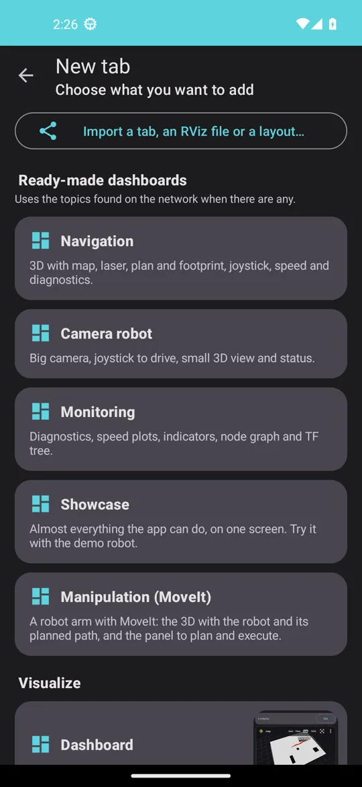

Bring your RViz setups and layouts
Goal: reuse the configurations you already have, instead of building the tabs again, and take VizMini2’s tabs back to those tools.

From RViz 2
Copy your
.rvizfile to the phone (or keep it on the PC).+ → Import a tab, an RViz file or a layout… (on the PC, Add → Import a VizMini2 file, an RViz file or a layout) and pick it.
A new RViz tab appears with the same displays, topics, fixed frame, background and view. To replace an existing tab’s displays instead, use Import .rviz file… in that RViz tab’s menu.
From a panel layout
Export the layout from your visualization tool (a
.json).Import it the same way: you get a dashboard with one widget per panel, placed as in the layout. 3D panels become RViz widgets, plots become Plot widgets (with their message paths, XY plots and
@derivative), images become Camera widgets, Publish panels become buttons, and so on. If the layout has a Tab panel, each of its tabs comes too, as a dashboard of its own.
From a plot layout
Save the layout from your plotting tool (a
.xml).Import it with the robot on the network (plot layouts do not save the message types; VizMini2 finds them there). Its plots, XY plots and Lua custom series come in as Plot tabs, or as a dashboard of plots when there are several tabs.
Check the notes
When something has no equivalent (a panel VizMini2 doesn’t have, an option it ignores), a dialog lists it before adding the tabs: tap Add to go on. Nothing is dropped silently.
Taking tabs back
Long-press a tab (right-click it in the PC’s sidebar) → Export as…, depending on what it has: an
RViz tab as an RViz 2 file, which opens with rviz2 -d file.rviz; a dashboard as a panel layout;
and plots as a plot layout that subscribes to the right topics. The formats are described in
Import and export.